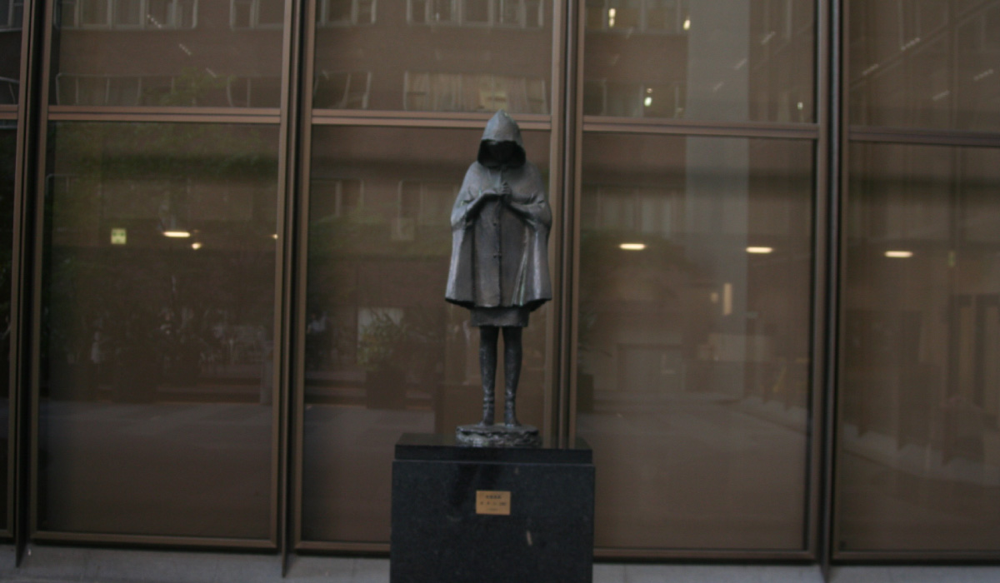
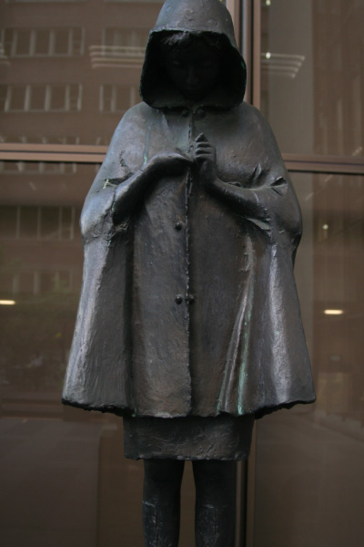
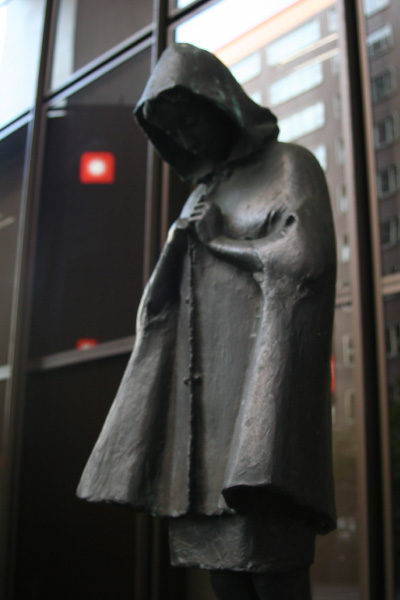

佐藤 忠良
 
作者の佐藤忠良は、平凡なごく普通の日常生活の中で見ることができる「人間の美」
をコンセプトに作品制作を行った。第二次世界大戦で従軍し、終戦後はシベリアで抑
留生活を送った経験がある。死と隣り合わせの過酷な労働環境、そしてシベリアに
生きる人々と自然は彼が帰還した後の芸術活動に大きな影響を与えた。60年代末に
制作されたこの作品は、マントのボタンを取り付けようとする少女を表した。日常
的なさりげない仕草を切り取っているが、どこか祈りを捧げているようにも感じる。